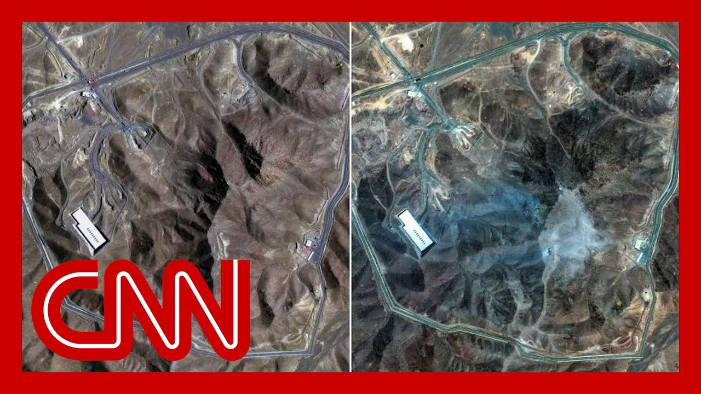

【CNN新闻：卫星图像显示伊朗核设施的前后对比】
Summary: Defense officials reveal details of Operation Midnight Hammer targeting Iran's nuclear facilities, highlighting precise strikes on Fordo, Natans, and Isfahan, while concerns grow over potential Iranian retaliation against U.S. assets in the region.
摘要： 国防官员披露了针对伊朗核设施的“午夜铁锤”行动细节，重点打击了福尔多、纳坦兹和伊斯法罕，同时担忧伊朗可能对中东地区的美军资产进行报复。

⏱️ Estimated Reading Time: 14 min
📚 六级生词 📚 雅思生词 📚 托福生词 📚 专八生词 📚 SAT生词 📚 考研生词 📚 GRE生词 📚 高考生词
We just got brand new details about Operation Midnight Hammer from Defense Secretary Pete Hexet and the chairman of the Joint Chiefs of Staff.
我们刚从国防部长皮特·赫克塞特和参谋长联席会议主席那里获得了关于“午夜铁锤”行动的最新细节。
Now here with me at the Magic Wall to break this all down is for what we know is returned retired Colonel, Suddwick Laiton, Colonel.
现在和我一起在“魔法墙”前解析这一切的是我们熟知的退役上校萨德威克·莱顿。
Thank you so much for being here.
非常感谢您的到来。
Take us through this mission because it had been in the planning for quite some time.
请带我们了解这次任务，因为它已经策划了相当长的时间。
It really has, Manuel.
确实如此，曼努埃尔。
And this is the graphic that the DOD provided us with this.
这是国防部提供给我们的图表。
So they started, they've been planning this for in some ways for over a year.
他们在某些方面已经策划了一年多。
And in other ways they've been doing exercises that kind of did the same thing for up to two or more years.
在其他方面，他们进行了长达两年或更久的类似演习。
But the key thing is this, the actual operational planning really started a few weeks ago once the direction came from the president to do this kind of thing.
但关键的是，实际的行动策划是在几周前总统下达指示后才真正开始的。
So when they left, white man Air Force Base, they did it basically right after midnight on the 21st of June.
他们在6月21日凌晨刚过午夜时分从怀特曼空军基地出发。
And then they came through and struck the targets in Iran about 18 hours later, 18 hours and 19 hours later.
大约18到19小时后，他们抵达并打击了伊朗的目标。
And they hit the three sites that we've been talking about before.
他们击中了我们之前讨论过的三个地点。
These are the ones that, of course, have become famous now, Fordo, Natans and Isfahan.
这些地点现在已众所周知：福尔多、纳坦兹和伊斯法罕。
And these are the ones that, of course, not only because they've been in the news, but because of what they had, became important from an operational perspective to actually eliminate.
这些地点不仅因为新闻曝光，还因其设施的重要性而从行动角度成为必须摧毁的目标。
And that's why they had the kind of payload that they did on the B2.
这就是为什么B2轰炸机携带了特定类型的弹药。
And there's been a lot of discussion about the Fordo facility in particular.
尤其是福尔多设施引发了大量讨论。
And the Pentagon says they've obliterated Iran's nuclear capabilities, but Fordo in particular.
五角大楼称他们已摧毁伊朗的核能力，尤其是福尔多。
How hard is that to penetrate?
它的防御有多难突破？
So take a look at this right here, Marner.
看看这个，曼努埃尔。
When you see the security perimeter right here, and then in just a second we'll get some more details here because you've got a support building and tunnel entrances.
这是安全边界，稍后我们会看到更多细节，包括辅助建筑和隧道入口。
This is way deep underground, almost 300 feet underground.
它位于地下深处，约300英尺。
So when you look at the layout of this, you've got those tunnel entrances that I talked about, that support building.
布局中有我提到的隧道入口和辅助建筑。
And this mountain covers the centrifuges.
这座山覆盖了离心机。
The centrifuges are the key part to them doing what they need to do to, in essence, enhance the uranium to get it to the level that they need.
离心机是他们浓缩铀至所需水平的关键设备。
So when you look at what this looked like before, June 20th, this is what the fuel enrichment facility looked like from a satellite view.
这是6月20日前燃料浓缩设施的卫星图像。
Now take a look at what happened here.
现在看看这里发生的变化。
Every single thing that you see here has been actually changed a bit.
你看到的每一样东西都发生了改变。
When you look at this, the June 20th slide, take a look at the facilities up here and over here.
对比6月20日的图像，看看这些设施。
Now look, this is gone.
现在，这些已经消失。
This right here is also gone.
这里的也消失了。
So these are the kinds of things that happen.
这就是发生的变化。
And another thing that's really interesting about this, take a look, this is that support building that we showed earlier.
另一个有趣的点是，这是我们之前展示的辅助建筑。
Everything looks intact.
一切看起来完好无损。
These are the tunnel entrances.
这些是隧道入口。
Now let's take a look.
现在再看看。
When you go over here, you see that these tunnel entrances have been damaged beyond repair.
这里的隧道入口已损毁无法修复。
There's what appears to be smoke damage right here at the support building.
辅助建筑上有烟熏痕迹。
And then when you look here, see these things, right in this area, right here.
再看这里，这个区域。
These are penetration holes right where the bombs hit.
这些是炸弹直接命中的穿透孔。
And when you look at, there's actually a further one when you go this way, right up in this area, right here, which shows that there are very key, precise impacts that they struck.
继续看，这个区域还有一个，表明打击非常精准。
And the idea here was to get at the centrifuges and use it with multiple bombs so that they could go down deep enough to eliminate the possibility of them even enriching the uranium.
目的是用多枚炸弹深入摧毁离心机，彻底消除其浓缩铀的可能性。
And we'll see if they've done that.
我们将观察是否成功。
The Pentagon says this thorough evaluation is still ongoing.
五角大楼表示全面评估仍在进行。
In meantime, there's this concern, real concern about retaliation from the Iranians against U.S. assets in the region.
同时，人们非常担忧伊朗会对该地区的美军资产进行报复。
There are a lot of them.
美军资产数量庞大。
Thousands of troops as well.
还有数千名士兵。
Yeah, basically 40,000 troops throughout the Middle East Monou, and especially concentrated in the Persian Gulf region, and what's across the Persian Gulf, Iran itself.
中东约有4万美军，主要集中在波斯湾地区，而伊朗就在波斯湾对面。
So that means that it's within missile ranges of not only the long-range missiles, obviously, but short-range missiles as well as the Iranians could easily lob into the areas such as the United Arab Emirates, Qatar, Bahrain, Kuwait, and Iraq.
这意味着美军不仅处于伊朗远程导弹射程内，其短程导弹也可轻易打击阿联酋、卡塔尔、巴林、科威特和伊拉克等地。
So those are the kinds of things that our forces have to worry about from a force protection standpoint.
这是美军在防护方面必须担忧的问题。
But each one of these areas really makes it very clear that every single one of our troops is definitely within range, but it doesn't mean that they can't defend themselves.
虽然每个区域的美军都在射程内，但他们仍能自卫。
They will be able to defend themselves if the proper measures are taken, and if we have the right intelligence when it comes to Iranian intentions.
若采取适当措施并掌握伊朗意图的情报，他们就能自卫。
Yeah, and that's everything that U.S. is watching for right now, the next step of the Iranians may take.
这就是美国目前密切关注的伊朗下一步行动。
Colonel Layton, thank you so much for breaking this all down for us.
莱顿上校，感谢您的详细解析。
You bet, Monou.
不客气，曼努埃尔。
Wolf, back to you.
沃尔夫，交还给你。
All right, Monou.
好的，曼努埃尔。
Join now by seeing our National Security Analysts Beth Center.
现在连线我们的国家安全分析师贝丝·森特。
Beth, thanks so much for joining us.
贝丝，非常感谢您的参与。
What kind of intelligence gathering is happening right now to ensure that the Pentagon's original assessment that had been made public that these Iranian assets were obliterated is actually accurate?
目前正在进行哪些情报收集以确保五角大楼公开的“伊朗核设施被彻底摧毁”的评估准确？
Right.
是的。
So there are going to be multiple different kinds of sensors and overhead imagery as well as trying to maybe listen in on what people are saying.
将使用多种传感器和空中图像，并尝试监听人员通讯。
These railings have a human network of spies.
情报机构还拥有间谍网络。
So all of these things will come together in the intelligence community.
所有这些将整合为全源情报。
We call it all source intelligence.
我们称之为全源情报。
We're taking things in from everywhere we can to put together a picture of what happened inside that hall.
我们从各处收集信息以还原设施内部情况。
But in addition to that, everybody, at least all of us on the outside are asking the question, where is all of Iran's highly enriched uranium and their centrifuges?
此外，外界都在追问伊朗的高浓缩铀和离心机去向。
And we say that with these three sites hit that there aren't other, that the H.E.U. enriched uranium and the centrifuges haven't been secreted away to covert facilities that I would say we would be crazy to think they didn't have to use a double negative.
尽管这三个地点被击中，但高浓缩铀和离心机可能已被转移至秘密设施——我们若认为他们没有备用设施就太天真了。
The U.S., as you know, Beth, is now in a heightened state of alert in the region for possible retaliation.
贝丝，你知道美国目前处于高度警戒状态以防伊朗报复。
How is the U.S. intelligence community now monitoring any potential Iranian-related threats?
情报机构如何监控伊朗相关威胁？
Well, a couple of different ways.
有几种方式。
Again, looking at all the groups that are very well known that have been tracked over many years because they have attacked U.S. troops throughout the region for a long time.
长期追踪已知的袭击过美军的组织。
And we are also, I'm sure, working with our liaison partners in these countries.
我们肯定也与盟国情报机构合作。
For example, the Iraqis have been fantastic partners.
例如伊拉克就是优秀伙伴。
They don't like to talk about it, of course, and we don't either.
双方对此都讳莫如深。
But, you know, obviously, you need to work with the governments to help ensure that U.S. troops are not attacked.
但显然需要与各国政府合作保护美军。
And we will be holding some of these countries accountable as well for doing what they can to keep the lid on these militia groups in their countries.
我们也会要求这些国家管控境内的民兵组织。
So we will be working with our partners and then also independently to be tracking all of this.
我们将与伙伴合作并独立追踪所有动态。
I'm very, very, very dangerous situation indeed.
这确实是非常危险的局面。
All right, Beth Center.
好的，贝丝·森特。
Thanks so much for joining us.
非常感谢您的参与。
Federal officials are warning about the potential retaliation from Iran in the wake of the U.S. attack on three Iranian nuclear facilities.
联邦官员警告伊朗可能报复美国对三个核设施的打击。
This morning, Iran's foreign minister warned that they have to respond, and the U.S. quote, crossed a very big red line.
今晨伊朗外长称必须回应，美方“越过了巨大红线”。
Joining us now, CNN's Homeland Security analyst, Julia Kayam.
现在连线CNN国土安全分析师朱莉娅·凯耶姆。
Julia, thanks so much for joining us.
朱莉娅，非常感谢您的参与。
What do you think?
您怎么看？
What are Homeland Security officials doing right now under this heightened alert?
国土安全部在此警戒状态下正采取哪些措施？
How concerned are they?
他们的担忧程度如何？
They are concerned.
他们很担忧。
We are hearing that there's going to be more focus on the domestic intelligence side of potential Iranian sleeper cells.
据悉将更关注国内潜在的伊朗潜伏小组。
We don't know to what extent they are formed and ready to activate, but it is something worth watching.
尚不清楚其组织程度，但值得警惕。
We've talked a lot about the denigration of Iran's capabilities to launch major attacks in the United States.
我们多次讨论过伊朗在美国境内发动大规模袭击的能力衰退。
That would happen to Hezbollah and Syria.
真主党和叙利亚也是如此。
And nonetheless, those capabilities have not been eliminated.
但这些能力并未完全消除。
Focus on the potential Homeland Security threat, different than a threat against U.S. interest abroad.
关注本土安全威胁，这与海外利益威胁不同。
And that will include internal investigations as well as, of course, a focus on border crossings.
包括内部调查和加强边境管控。
President Trump's former Secretary of State Mike Pompeo is warning that the attack could have Iran activate what are called sleeper cells.
前国务卿蓬佩奥警告袭击可能激活伊朗潜伏小组。
Is that the biggest concern for potential retaliation from Iran?
这是伊朗报复的最大担忧吗？
I think it's the biggest Homeland Security concern, but I don't think it's the most likely scenario.
虽是本土安全最大担忧，但并非最可能情景。
From Iran's perspective, going out to U.S. interest abroad is going to be easier.
对伊朗而言，攻击海外美国利益更容易。
We have lots of troops there.
我们在海外有大量驻军。
We have lots of U.S. interest abroad, including in the Straits of Hormuz.
包括霍尔木兹海峡等利益。
So it's going to be easier for them to launch attacks.
所以他们更可能发动海外袭击。
But we would be silly and naive to think that Iran had not thought through day two planning.
但若认为伊朗没有后续计划就太天真了。
They knew that this was coming, either from Israel or us.
他们早知道会遭到以色列或我们的打击。
And so those sleeper cells, which may have been followed for some time, they may have gone dark.
那些可能被追踪过的潜伏小组或许已转入静默。
That is the kind of thing that a very aggressive FBI is going to have to look after now and a Homeland Security Department, which has been really focused on ice enforcement, is going to have to shift gears and focus on both cyber potential attacks or, of course, physical attacks here, whether they have the capacity or the manpower now.
FBI需积极调查，国土安全部需从移民执法转向防范网络和实体攻击——无论其当前能力如何。
We don't know, but that if they're looking to the concerns here in the homeland, that's what they're going to need to do at the Department of Homeland Security.
若关注本土威胁，这就是国土安全部必须做的。
Julea Kayem, as always, thank you very much for joining us.
朱莉娅·凯耶姆，一如既往感谢您。
Thank you.
谢谢。